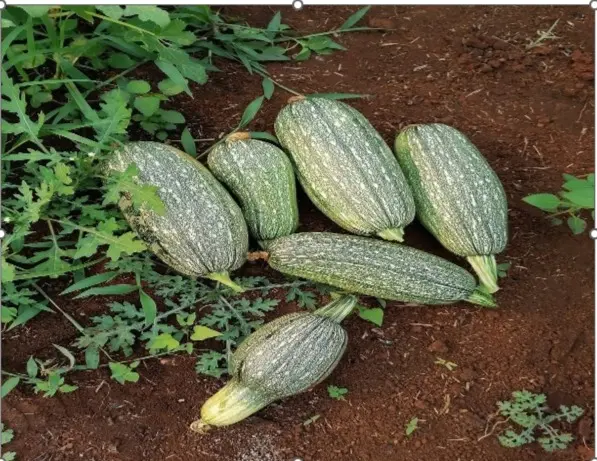

Calabaza (Cucumis sativus).
La calabaza que se siembra en el cbta es la típica y su proceso de sembrado es en pequeñas parcelas de 20 metros cuadrados por grupo, donde se siembra de 7 a 10 plantitas. Su tiempo de germinación es de 5-7 días. Se debe de mantener en suelo húmedo y con luz solar directa. El cuidado incluye riego constante y vigilancia, la producción inicia a los 50 días y se cosechan cuando alcanzan un buen tamaño y firmeza.